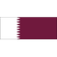
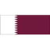
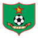
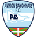
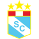

比赛列表
共 1111 场1616 场11167 场842 场063 场059 场039 场050 场0260 场
胜平负队名旁为近 5 场
11/21 · 0 场260 场未开赛
09:00墨超普埃布拉VS圣路易斯竞技仅赛程
11:00墨超华雷斯 VS
VS 阿特拉斯仅赛程
阿特拉斯仅赛程
11:00墨超蒂华纳 VS
VS 亚特兰特仅赛程
亚特兰特仅赛程
12:00澳超奥克兰FC VS
VS 墨胜利仅赛程
墨胜利仅赛程
13:00日职乙宫崎惊奇牛鸟 VS
VS 磐城仅赛程
磐城仅赛程
13:00日职乙富山胜利 VS
VS 大分三神仅赛程
大分三神仅赛程
13:00日职乙枥木城 VS新泻天鹅仅赛程
VS新泻天鹅仅赛程
13:00日职乙横滨FCVS北海道札幌冈萨多仅赛程
13:00日职乙甲府风林 VS万劳雷八户仅赛程
VS万劳雷八户仅赛程
13:00日职乙磐田喜悦 VS
VS 大宫松鼠RB仅赛程
大宫松鼠RB仅赛程
13:00日职乙秋田蓝色闪电VS 山形山神仅赛程
山形山神仅赛程
13:00日职乙藤枝MYFCVS FC今治仅赛程
FC今治仅赛程
13:00日职乙鸟栖沙岩VS 仙台七夕仅赛程
仙台七夕仅赛程
13:00日职联东京绿茵 VS名古屋鲸仅赛程
VS名古屋鲸仅赛程
13:00日职联京都 VS
VS 浦和红钻仅赛程
浦和红钻仅赛程
13:00日职联广岛三箭VS 横滨水手仅赛程
横滨水手仅赛程
13:00日职联町田泽维 VS
VS 长崎航海仅赛程
长崎航海仅赛程
13:00韩K2水原三星VS 庆南FC仅赛程
庆南FC仅赛程
13:00韩K2釜山IPark VS忠北清州FC仅赛程
VS忠北清州FC仅赛程
13:00韩K联全北现代 VSFC首尔仅赛程
VSFC首尔仅赛程
13:00韩K联浦项制铁 VSFC安养仅赛程
VSFC安养仅赛程
14:00日职联大阪樱花VS FC东京仅赛程
FC东京仅赛程
14:00日职联川崎前锋 VS
VS 福冈黄蜂仅赛程
福冈黄蜂仅赛程
14:00澳超中央海岸 VS
VS 珀斯仅赛程
珀斯仅赛程
15:00日职联大阪钢巴 VS冈山绿雉仅赛程
VS冈山绿雉仅赛程
15:00香港超级联赛Southern DistrictVSBC Rangers仅赛程
15:00香港超级联赛大埔 VSKitchee仅赛程
VSKitchee仅赛程
15:30韩K2城南FCVS 龙仁FC仅赛程
龙仁FC仅赛程
15:30韩K2金浦FC VS水原FC仅赛程
VS水原FC仅赛程
15:30韩K联仁川联 VS
VS 蔚山现代仅赛程
蔚山现代仅赛程
15:30韩K联江原FCVS大田市民仅赛程
16:30印尼甲级联赛佩斯克谏义里VS日惹仅赛程
16:30印尼甲级联赛泗水VS 北马鲁古联仅赛程
北马鲁古联仅赛程
16:40澳超布里斯班VS 悉尼FC仅赛程
悉尼FC仅赛程
18:30土超青年联合 VS
VS Gaziantep FK仅赛程
Gaziantep FK仅赛程
18:30阿塞拜疆超级联赛Keshla FCVSTuran仅赛程
19:00乌克兰超级联赛Kolos KovalivkaVSFC Kharkiv仅赛程
19:00乌克兰超级联赛Kryvbas KRVSKudrivka仅赛程
19:00亚美尼亚超级联赛SyunikVS 乌拉尔图仅赛程
乌拉尔图仅赛程
19:00摩尔多瓦超级联赛Politehnica UTMVS辛布鲁仅赛程
19:00柬埔寨联赛Boeung KetVSLife Sihanoukville仅赛程
19:00柬埔寨联赛NagaWorldVSDangkor Senchey仅赛程
19:00柬埔寨联赛Phnom Penh CrownVSKirivong Sok Sen Chey仅赛程
19:00泰国超级联赛PattaniVS 素可泰仅赛程
素可泰仅赛程
19:00葡萄牙杯Atlético CPVS 卡萨皮亚仅赛程
卡萨皮亚仅赛程
19:00越南超级联赛Bình PhướcVSHa Noi仅赛程
19:00越南超级联赛南定VSHai Phong仅赛程
19:30印度超级联赛清奈VS旁遮普仅赛程
19:30新加坡超级联赛Young LionsVSTanjong Pagar仅赛程
19:30泰国超级联赛春武里VS 乌泰他尼仅赛程
乌泰他尼仅赛程
20:00乌兹别克斯坦超…Kokand-1912VSSogdiana仅赛程
20:00乌兹别克斯坦超…纳萨夫VSMash'al仅赛程
20:00印尼甲级联赛望加锡VS 佩斯查雅加达仅赛程
佩斯查雅加达仅赛程
20:00印尼甲级联赛隐形部队VS佩斯查普仅赛程
20:00德乙汉诺威 VS
VS 菲尔特仅赛程
菲尔特仅赛程
20:00德乙沃夫斯堡 VS基尔仅赛程
VS基尔仅赛程
20:00德乙纽伦堡VS 不伦瑞克仅赛程
不伦瑞克仅赛程
20:00瑞典超Ostersunds FKVSVarbergs BoIS FC仅赛程
20:00立陶宛甲级联赛ŠiauliaiVSMinija仅赛程
20:15马来西亚超级联赛MelakaVSImigresen仅赛程
20:30U17世界杯Japan U17 VS
VS Colombia U17仅赛程
Colombia U17仅赛程
20:30U17世界杯Serbia U17VSHonduras U17仅赛程
20:30丹甲瓦埃勒 VS
VS HB Koge仅赛程
HB Koge仅赛程
20:30匈牙利甲级联赛普斯卡什学院VSMTK Budapest仅赛程
20:30斯洛文尼亚杯SvobodaVSŠencur仅赛程
20:30泰国超级联赛叻丕府 VS
VS 巴蜀基利仅赛程
巴蜀基利仅赛程
20:30英乙吉林汉姆 VS克鲁仅赛程
VS克鲁仅赛程
20:30英乙纽波特郡 VS
VS 斯文登仅赛程
斯文登仅赛程
20:30英冠南安普敦 VS
VS 德比郡仅赛程
德比郡仅赛程
20:30英冠米尔沃尔 VS
VS 女王公园巡游者仅赛程
女王公园巡游者仅赛程
20:30英冠诺维奇 VS
VS 卡迪夫城仅赛程
卡迪夫城仅赛程
20:30英甲布莱克浦VS维冈仅赛程
20:30英甲雷丁 VS
VS 布罗姆利仅赛程
布罗姆利仅赛程
20:30英超曼城 VS
VS 富勒姆仅赛程
富勒姆仅赛程
20:45伊朗波斯湾职业…Nassaji MazandaranVSAluminium Arak仅赛程
20:45保加利亚甲级联赛Slavia SofiaVS阿尔达仅赛程
20:45阿联酋职业联赛KhorfakkanVS阿尔贾兹拉仅赛程
20:45阿联酋职业联赛巴尼亚斯VS阿尔纳斯尔仅赛程
21:00U17世界杯Tanzania U17VSCosta Rica U17仅赛程
21:00丹甲Vendsyssel FF VSHvidovre仅赛程
VSHvidovre仅赛程
21:00乌兹别克斯坦超…XorazmVSBuxoro仅赛程
21:00伊拉克联赛NewrozVSAl-Karma仅赛程
21:00土超加拉塔萨 VS萨姆松体育仅赛程
VS萨姆松体育仅赛程
21:00土超阿梅德VS里泽体育仅赛程
21:00挪超特罗姆瑟 VS
VS 维京仅赛程
维京仅赛程
21:00摩尔多瓦超级联赛谢里夫VS米尔萨米仅赛程
21:00罗甲奇克塞雷达 VS
VS 胡内多阿拉乌鸦仅赛程
胡内多阿拉乌鸦仅赛程
21:00西乙萨瓦德尔 VS格拉纳达仅赛程
VS格拉纳达仅赛程
21:00西甲阿拉维斯 VS
VS 拉科仅赛程
拉科仅赛程
21:00阿塞拜疆超级联赛Safa BakuVSQabala仅赛程
21:00马来西亚超级联赛Kelantan Red Warrior FCVSSabah FA仅赛程
21:30U17世界杯Cameroon U17VS Venezuela U17仅赛程
Venezuela U17仅赛程
21:45波兰超克拉科维亚VS乔治罗尼亚仅赛程
22:00丹甲Esbjerg VS
VS AB格莱萨克瑟仅赛程
AB格莱萨克瑟仅赛程
22:00克罗地亚甲级联赛NK Lokomotiva ZagrebVS哈伊杜克仅赛程
22:00印度超级联赛东北联VS果阿仅赛程
22:00塞浦路斯甲级联赛Omonia AradippouVS 帕福斯仅赛程
帕福斯仅赛程
22:00意乙Arezzo VS
VS 帕多瓦仅赛程
帕多瓦仅赛程
22:00意乙Ascoli VS维琴察仅赛程
VS维琴察仅赛程
22:00意乙南蒂罗尔 VS
VS 克雷莫内塞仅赛程
克雷莫内塞仅赛程
22:00意乙卡坦扎罗 VS
VS 巴勒莫仅赛程
巴勒莫仅赛程
22:00意乙卡拉拉 VS恩特拉仅赛程
VS恩特拉仅赛程
22:00意乙恩波利VS 比萨仅赛程
比萨仅赛程
22:00意乙摩德纳VS 尤维斯塔比亚仅赛程
尤维斯塔比亚仅赛程
22:00意乙桑普多利亚 VS
VS Benevento仅赛程
Benevento仅赛程
22:00意乙维罗纳 VS
VS 切塞纳仅赛程
切塞纳仅赛程
22:00意乙阿韦利诺 VS
VS 曼托瓦仅赛程
曼托瓦仅赛程
22:00意甲拉齐奥VS 莱切仅赛程
莱切仅赛程
22:00意甲科莫 VS
VS 卡利亚里仅赛程
卡利亚里仅赛程
22:00捷甲Artis VS
VS 亚布洛内茨仅赛程
亚布洛内茨仅赛程
22:00捷甲俄斯特拉发VS 特普利采仅赛程
特普利采仅赛程
22:00捷甲奥洛穆茨VS斯拉维亚仅赛程
22:00捷甲姆拉达博莱斯拉夫 VS兹林仅赛程
VS兹林仅赛程
22:00斯洛文尼亚甲级…卢布尔雅那VSRadomlje仅赛程
22:00瑞典超米亚尔比VS 马尔默仅赛程
马尔默仅赛程
22:00瑞典超索尔纳 VS代格福什仅赛程
VS代格福什仅赛程
22:00葡萄牙杯MafraVS阿罗卡仅赛程
22:00黑山甲级联赛Mladost DGVSArsenal Tivat仅赛程
22:00黑山甲级联赛Otrant-OlympicVSBokelj仅赛程
22:00黑山甲级联赛彼得罗瓦茨VS德西奇仅赛程
22:00黑山甲级联赛莫尔纳VS苏捷斯卡仅赛程
22:30U17世界杯United States U17 VSMontenegro U17已取消
VSMontenegro U17已取消
22:30伊朗波斯湾职业…Foolad FCVS 塞帕汉仅赛程
塞帕汉仅赛程
22:30德甲勒沃库森 VS
VS 帕德博恩仅赛程
帕德博恩仅赛程
22:30德甲埃沃斯堡 VS弗赖堡仅赛程
VS弗赖堡仅赛程
22:30德甲柏林联合 VS
VS 莱红牛仅赛程
莱红牛仅赛程
22:30德甲法兰克福 VS
VS 霍芬海姆仅赛程
霍芬海姆仅赛程
22:30德甲门兴 VS
VS 多特蒙德仅赛程
多特蒙德仅赛程
22:30斯洛伐克超级联赛AS TrencinVSPodbrezová仅赛程
22:30斯洛伐克超级联赛RužomberokVS布拉迪斯仅赛程
22:30斯洛伐克超级联赛日利纳VSDukla Banská Bystrica仅赛程
23:00U17世界杯Brazil U17 VS
VS Republic of Ireland U17仅赛程
Republic of Ireland U17仅赛程
23:00亚美尼亚超级联赛AraratVSBKMA仅赛程
23:00匈牙利甲级联赛UjpestVSKisvarda FC仅赛程
23:00塞浦路斯甲级联赛奥莫尼亚VSApoel Nicosia仅赛程
23:00挪超汉坎 VS
VS 腓特烈仅赛程
腓特烈仅赛程
23:00比乙RFC列日VS 安德莱赫特B队仅赛程
安德莱赫特B队仅赛程
23:00比乙欧本 VS
VS Sporting Hasselt仅赛程
Sporting Hasselt仅赛程
23:00比甲夏勒罗瓦 VS
VS 圣图尔登仅赛程
圣图尔登仅赛程
23:00苏冠女王公园VS利文斯顿仅赛程
23:00苏冠拉茨流浪者 VS
VS 帕尔蒂克蓟花仅赛程
帕尔蒂克蓟花仅赛程
23:00苏冠邓弗姆林竞技 VS格里诺克摩顿仅赛程
VS格里诺克摩顿仅赛程
23:00苏冠阿布罗斯 VSStenhousemuir仅赛程
VSStenhousemuir仅赛程
23:00苏超凯尔特人VS圣米伦仅赛程
23:00苏超基尔马诺克VS阿伯丁仅赛程
23:00苏超希伯尼安VS 邓迪联仅赛程
邓迪联仅赛程
23:00苏超福尔柯克VS 圣约翰斯通仅赛程
圣约翰斯通仅赛程
23:00英乙克劳利 VS弗利特伍德仅赛程
VS弗利特伍德仅赛程
23:00英乙切尔滕汉姆 VS
VS 布里斯托尔流浪仅赛程
布里斯托尔流浪仅赛程
23:00英乙切斯特菲尔德 VS
VS 什鲁斯伯里仅赛程
什鲁斯伯里仅赛程
23:00英乙北安普敦 VS罗奇代尔仅赛程
VS罗奇代尔仅赛程
23:00英乙奥尔德姆VS 埃克塞特仅赛程
埃克塞特仅赛程
23:00英乙巴尼特 VS
VS 维尔港仅赛程
维尔港仅赛程
23:00英乙格里姆 VS罗瑟汉姆仅赛程
VS罗瑟汉姆仅赛程
23:00英乙特兰米尔 VS
VS 科尔切斯特仅赛程
科尔切斯特仅赛程
23:00英乙约克城 VS
VS 沃尔索尔仅赛程
沃尔索尔仅赛程
23:00英乙阿克灵顿 VS索尔福德城仅赛程
VS索尔福德城仅赛程
23:00英冠博尔顿 VS
VS 朴次茅斯仅赛程
朴次茅斯仅赛程
23:00英冠斯托克城 VS
VS 伯明翰仅赛程
伯明翰仅赛程
23:00英冠斯旺西 VS
VS 西布朗仅赛程
西布朗仅赛程
23:00英冠林肯城 VS
VS 雷克斯仅赛程
雷克斯仅赛程
23:00英冠狼队 VS
VS 查尔顿仅赛程
查尔顿仅赛程
23:00英冠米堡 VS
VS 布城仅赛程
布城仅赛程
23:00英冠西汉姆联 VS
VS 普雷斯顿仅赛程
普雷斯顿仅赛程
23:00英冠谢菲尔德联 VS沃特福德仅赛程
VS沃特福德仅赛程
23:00英甲伯顿 VS
VS 卢顿仅赛程
卢顿仅赛程
23:00英甲剑桥联 VS斯托克港仅赛程
VS斯托克港仅赛程
23:00英甲哈德斯VS 莱切斯特仅赛程
莱切斯特仅赛程
23:00英甲布拉德福 VS
VS 唐卡斯特仅赛程
唐卡斯特仅赛程
23:00英甲普利茅斯 VS彼得伯勒仅赛程
VS彼得伯勒仅赛程
23:00英甲曼斯菲尔德VS米尔顿仅赛程
23:00英甲牛津联VS 威科姆仅赛程
威科姆仅赛程
23:00英甲莱顿东方 VSAFC温布尔登仅赛程
VSAFC温布尔登仅赛程
23:00英甲诺茨郡 VS斯蒂夫尼奇仅赛程
VS斯蒂夫尼奇仅赛程
23:00英超伯恩茅斯 VS
VS 诺丁汉仅赛程
诺丁汉仅赛程
23:00英超切尔西 VS利兹联仅赛程
VS利兹联仅赛程
23:00英超热刺VS 伊普斯仅赛程
伊普斯仅赛程
23:00英超维拉VS 桑德兰仅赛程
桑德兰仅赛程
23:00英超考文垂 VS
VS 水晶宫仅赛程
水晶宫仅赛程
23:00葡萄牙杯阿维斯VS 通德拉仅赛程
通德拉仅赛程
23:15保加利亚甲级联赛Spartak VarnaVS瓦尔纳黑海仅赛程
23:15西乙皇家社会B队 VS
VS 加的斯仅赛程
加的斯仅赛程
23:15西甲巴列卡诺VS 巴伦西亚仅赛程
巴伦西亚仅赛程
23:25阿联酋职业联赛Dubai UnitedVS 阿尔瓦赫达仅赛程
阿尔瓦赫达仅赛程
23:30U17世界杯Chile U17 VS
VS Algeria U17仅赛程
Algeria U17仅赛程
23:30U17世界杯Mexico W U17VS Romania U17仅赛程
Romania U17仅赛程
23:30伊拉克联赛Naft MaysanVSMosul仅赛程
23:30直布罗陀超级联赛Glacis UnitedVS圣约瑟夫仅赛程
23:30罗甲克卢日 VS加拉茨钢铁仅赛程
VS加拉茨钢铁仅赛程
23:30荷乙FC埃因霍温 VS
VS 瓦尔韦克仅赛程
瓦尔韦克仅赛程
23:30荷甲奈梅亨 VS
VS PSV埃因霍温仅赛程
PSV埃因霍温仅赛程
00:00U17世界杯Côte d'Ivoire U17VS Uzbekistan U17仅赛程
Uzbekistan U17仅赛程
00:00U17世界杯Fiji U17VS Morocco U17仅赛程
Morocco U17仅赛程
00:00乌克兰超级联赛顿涅茨克矿工VSLivyi Bereh仅赛程
00:00保加利亚甲级联赛Septemvri SofiaVSLokomotiv Plovdiv仅赛程
00:15伊拉克联赛Al-Jolan SCVSNaft仅赛程
01:00波兰超格利维采皮亚斯特 VS
VS 凯尔采科罗纳仅赛程
凯尔采科罗纳仅赛程
01:30德乙比勒菲尔德 VS
VS 马格德堡仅赛程
马格德堡仅赛程
01:30德乙达姆施塔 VS
VS 海登海姆仅赛程
海登海姆仅赛程
01:30沙特联吉达国民 VS利雅得胜利仅赛程
VS利雅得胜利仅赛程
02:00丹甲Aarhus FremadVSHobro仅赛程
02:00丹甲Kolding IFVS奥尔堡仅赛程
02:00丹麦超奥胡斯 VS
VS 灵比仅赛程
灵比仅赛程
02:00挪超莫尔德 VS
VS 博德闪耀仅赛程
博德闪耀仅赛程
02:30瑞士甲尼永VS 维尔1900仅赛程
维尔1900仅赛程
02:30瑞士甲拉珀斯维尔VS 阿劳仅赛程
阿劳仅赛程
02:30瑞士甲洛桑乌契 VS
VS 克里恩斯仅赛程
克里恩斯仅赛程
02:30瑞士甲纳沙泰尔 VS
VS 卡鲁日之星仅赛程
卡鲁日之星仅赛程
02:30罗甲康斯坦察法鲁尔 VS
VS 克卢日大学仅赛程
克卢日大学仅赛程
02:45科威特超级联赛Al KuwaitVSAl Salmiyah仅赛程
02:45科威特超级联赛KazmaVSAl Fahaheel仅赛程
03:00比乙利尔斯 VS
VS 洛克伦仅赛程
洛克伦仅赛程
03:00比乙布鲁日B队VSExcelsior Virton仅赛程
03:00法乙兰斯 VS
VS 圣埃蒂安仅赛程
圣埃蒂安仅赛程
03:00法乙南特 VS
VS 格勒诺布仅赛程
格勒诺布仅赛程
03:00法乙南锡 VS第戎仅赛程
VS第戎仅赛程
03:00法乙圣旺红星VS 波城仅赛程
波城仅赛程
03:00法乙拉瓦勒 VS蒙彼利埃仅赛程
VS蒙彼利埃仅赛程
03:00法乙梅斯 VS
VS 布洛涅仅赛程
布洛涅仅赛程
03:00法乙甘冈VS罗德兹仅赛程
03:00法乙索肖 VS
VS 敦刻尔克仅赛程
敦刻尔克仅赛程
03:00法乙阿讷西 VS
VS 克莱蒙仅赛程
克莱蒙仅赛程
03:00英超国际杯Ipswich Town U21VSFC Porto U21仅赛程
03:00英超国际杯富勒姆 U21 VS葡萄牙体育B队仅赛程
VS葡萄牙体育B队仅赛程
03:00英超联赛杯Bristol City U21VSNorwich City U21仅赛程
03:00英超联赛杯Burnley U21VSFleetwood Town U21仅赛程
03:00英超联赛杯Cardiff City U21VSPlymouth U21仅赛程
03:00英超联赛杯Queens Park Rangers U21VSBlackburn Rovers U21仅赛程
03:00英超联赛杯West Bromwich Albion U21VSCoventry City U21仅赛程
03:00英超联赛杯利兹联 U21VSCharlton Athletic U21仅赛程
03:00荷乙乌德勒支青年队 VS
VS 埃门仅赛程
埃门仅赛程
03:00荷乙奥斯VS 罗达JC仅赛程
罗达JC仅赛程
03:00荷乙格拉夫 VS
VS 马斯特里仅赛程
马斯特里仅赛程
03:00荷乙海尔蒙特 VS
VS 多德勒支仅赛程
多德勒支仅赛程
03:00荷乙登博思VS 芬洛仅赛程
芬洛仅赛程
03:00荷乙福伦丹 VS
VS 阿贾克斯青年队仅赛程
阿贾克斯青年队仅赛程
03:00荷乙维特斯 VS
VS 阿尔克马尔青年队仅赛程
阿尔克马尔青年队仅赛程
03:00荷乙赫拉克勒 VS
VS PSV埃因霍温青年仅赛程
PSV埃因霍温青年仅赛程
03:00荷乙阿尔梅勒 VS
VS 布雷达仅赛程
布雷达仅赛程
03:15瑞士甲伊韦尔东 VS温特图尔仅赛程
VS温特图尔仅赛程
03:30德甲拜仁 VS
VS 科隆仅赛程
科隆仅赛程
03:30波兰超什切青波贡 VS史拉斯科仅赛程
VS史拉斯科仅赛程
03:30苏冠Inverness CT VS艾尔联仅赛程
VS艾尔联仅赛程
03:30西乙FC安道尔VS 莱加内斯仅赛程
莱加内斯仅赛程
03:45威尔士超级联赛Airbus UKVSColwyn Bay仅赛程
03:45威尔士超级联赛Briton FerryVSHolywell仅赛程
03:45威尔士超级联赛Cardiff METVSAmmanford AFC仅赛程
03:45威尔士超级联赛Flint Town UnitedVSCambrian & Clydach仅赛程
03:45威尔士超级联赛LlandudnoVSBarry Town仅赛程
03:45威尔士超级联赛卡那封 VS
VS 康纳码头仅赛程
康纳码头仅赛程
03:45威尔士超级联赛宾尼邦特VS 哈弗福德韦斯特仅赛程
哈弗福德韦斯特仅赛程
03:45威尔士超级联赛新圣徒 VSTrefelin仅赛程
VSTrefelin仅赛程
03:45比甲色格拉布鲁日 VS
VS 韦斯特洛仅赛程
韦斯特洛仅赛程
03:45法甲特鲁瓦 VS
VS 勒阿弗尔仅赛程
勒阿弗尔仅赛程
04:00直布罗陀超级联赛Europa PointVSMons Calpe仅赛程
04:00英甲巴恩斯利 VS
VS 谢周三仅赛程
谢周三仅赛程
04:00西甲毕尔巴鄂 VS
VS 西班牙人仅赛程
西班牙人仅赛程
04:30巴拉圭甲级联赛亚美利亚人VS 卢克尼奥体育仅赛程
卢克尼奥体育仅赛程
04:45葡萄牙杯波尔图 VSParedes仅赛程
VSParedes仅赛程
07:00巴拉圭甲级联赛雷科莱塔 VS
VS 瓜拉尼仅赛程
瓜拉尼仅赛程
11/20 · 0 场50 场未开赛
11:00美职联西雅图VS 盐湖城仅赛程
盐湖城仅赛程
16:30印尼甲级联赛GarudayaksaVS马都拉联仅赛程
16:30印尼甲级联赛PSS SlemanVS 阿雷马仅赛程
阿雷马仅赛程
16:40澳超西悉尼VS 阿德莱德仅赛程
阿德莱德仅赛程
16:45马来西亚超级联赛Negeri SembilanVSKuching FA仅赛程
18:00日职联柏太阳神 VS千叶市原仅赛程
VS千叶市原仅赛程
18:00日职联神户胜利VS水户蜀葵仅赛程
18:00日职联鹿岛鹿角VS 清水心跳仅赛程
清水心跳仅赛程
18:00越南超级联赛Thanh HóaVSHoang Anh Gia Lai仅赛程
18:30阿塞拜疆超级联赛Imisli FKVS兹拉仅赛程
19:00亚美尼亚超级联赛VanVS亚拉腊仅赛程
19:30印度超级联赛东孟加拉B队 VS
VS 德里仅赛程
德里仅赛程
19:30新加坡超级联赛Albirex Niigata SVSBalestier Khalsa仅赛程
19:35中国足协杯北京国安VS 上海海港仅赛程
上海海港仅赛程
20:00乌兹别克斯坦超…LokomotivVS 棉农仅赛程
棉农仅赛程
20:00乌兹别克斯坦超…OlmaliqVSQizilqum仅赛程
20:00伊朗波斯湾职业…Fajr SepasiVSChadormalu SC仅赛程
20:00伊朗波斯湾职业…ZOB AhanVSShams Azar Qazvin仅赛程
20:00印尼甲级联赛德瓦联 VS佩斯塔坦格朗仅赛程
VS佩斯塔坦格朗仅赛程
20:00香港超级联赛WarriorsVSNorth District仅赛程
20:15越南超级联赛ViettelVSSong Lam Nghe An仅赛程
20:45伊朗波斯湾职业…Persepolis FCVSPaykan仅赛程
20:45阿联酋职业联赛伊蒂哈德卡尔巴VS沙迦仅赛程
21:00U17世界杯Belgium U17 VSVietnam U17仅赛程
VSVietnam U17仅赛程
21:00U17世界杯Cuba U17VSTajikistan U17仅赛程
21:00伊拉克联赛ZakhoVSAl Shorta仅赛程
21:00马来西亚超级联赛TerengganuVSDPMM FC Brunei仅赛程
21:30U17世界杯Mali U17 VSNew Zealand U17仅赛程
VSNew Zealand U17仅赛程
21:30乌兹别克斯坦超…NavbahorVSNeftchi仅赛程
22:00U17世界杯Spain U17 VSChina PR U17仅赛程
VSChina PR U17仅赛程
22:00伊拉克联赛Al Minaa BasraVSKarbala仅赛程
22:00印度超级联赛班加罗尔VS孟买城仅赛程
22:30伊朗波斯湾职业…Sanat NaftVSEsteghlal Khuzestan仅赛程
23:00U17世界杯Italy U17 VSJamaica U17仅赛程
VSJamaica U17仅赛程
23:00亚美尼亚超级联赛ShirakVSGandzasar仅赛程
23:00阿塞拜疆超级联赛SumqayıtVS 萨巴仅赛程
萨巴仅赛程
23:25阿联酋职业联赛迪拜国民青年VS阿治曼仅赛程
23:30U17世界杯Senegal U17VS Croatia U17仅赛程
Croatia U17仅赛程
23:30伊拉克联赛巴格达扎乌拉VSAl Talaba仅赛程
23:30罗甲博托沙尼 VS
VS 沃伦塔里仅赛程
沃伦塔里仅赛程
00:00U17世界杯Argentina U17 VS
VS Australia U17仅赛程
Australia U17仅赛程
00:00U17世界杯Egypt U17VS Greece U17仅赛程
Greece U17仅赛程
00:00伊拉克联赛Ghaz Al ShamalVSAl Karkh仅赛程
02:00丹甲弗雷德里西亚VS希勒罗德仅赛程
05:00乌拉圭杯蒙得维的亚城力矩VS 乌拉圭民族仅赛程
乌拉圭民族仅赛程
05:00乌拉圭杯达努比奥 VS尤文图德仅赛程
VS尤文图德仅赛程
06:30巴甲维多利亚VS布拉干蒂诺RB仅赛程
06:30巴甲达伽马 VS巴西国际仅赛程
VS巴西国际仅赛程
08:30巴甲圣保罗 VS
VS 弗鲁米嫩仅赛程
弗鲁米嫩仅赛程
08:30美职联奥兰多 VS
VS FC辛辛那提仅赛程
FC辛辛那提仅赛程
11/19 · 0 场39 场未开赛
18:00友谊赛Switzerland U17VSCzech Republic U17仅赛程
20:00东盟俱乐部锦标赛Svay RiengVS 曼谷港务仅赛程
曼谷港务仅赛程
20:00东盟俱乐部锦标赛万隆 VSShan United仅赛程
VSShan United仅赛程
20:00斯洛伐克杯Lokomotíva ZvolenVS科希策仅赛程
20:30东盟俱乐部锦标赛河内公安VS 柔佛仅赛程
柔佛仅赛程
20:30斯洛文尼亚杯BeltinciVS 采列仅赛程
采列仅赛程
20:30斯洛文尼亚杯DobVSBistrica仅赛程
20:45阿联酋职业联赛迪拜连接 VSHatta SC仅赛程
VSHatta SC仅赛程
21:00U17世界杯France U17 VSHaiti U17仅赛程
VSHaiti U17仅赛程
21:00U17世界杯New Caledonia U17VS Ecuador U17仅赛程
Ecuador U17仅赛程
21:00乌兹别克斯坦超…SurkhonVS安集延仅赛程
21:00伊拉克联赛DuhokVSErbil仅赛程
21:00伊朗波斯湾职业…Kheybar KhorramabadVS德黑兰独立仅赛程
21:00伊朗波斯湾职业…MalavanVSGol Gohar仅赛程
21:30U17世界杯Korea Republic U17VSUganda U17仅赛程
21:45伊拉克联赛Al KahrabaaVSDiyala仅赛程
21:45伊朗波斯湾职业…Mes Shahr-e BabakVS 大不里士拖拉机仅赛程
大不里士拖拉机仅赛程
22:00U17世界杯Saudi Arabia U17VS Uruguay U17仅赛程
Uruguay U17仅赛程
23:00U17世界杯Mozambique U17VS Denmark U17仅赛程
Denmark U17仅赛程
23:25阿联酋职业联赛艾因VS阿尔达弗拉仅赛程
23:30U17世界杯Qatar U17

VSPanama U17仅赛程23:30伊拉克联赛GharrafVSAl Quwa Al Jawiya仅赛程
00:00斯洛文尼亚杯RačeVSRadomlje仅赛程
00:00斯洛文尼亚杯Tabor SežanaVSFužinar仅赛程
00:30卡塔尔乙级联赛Al Rayyan SC BVSAl Mesaimeer仅赛程
01:30塞尔维亚杯ZemunVS拉德尼基1923仅赛程
02:00国王杯乌特博VS萨瓦德尔仅赛程
02:00国王杯波图加莱特VSReal Unión仅赛程
03:00国王杯AlcoyanoVS 马洛卡仅赛程
马洛卡仅赛程
03:00国王杯BadajozVS特内里费仅赛程
03:00英超联赛杯诺丁汉森林 U21 VS
VS 纽卡斯尔联 U21仅赛程
纽卡斯尔联 U21仅赛程
03:30国王杯Deportiva MineraVS卡塔赫纳仅赛程
03:30国王杯雷迪斯VSBarakaldo仅赛程
06:30巴甲科里蒂巴 VS
VS 桑托斯仅赛程
桑托斯仅赛程
07:00巴甲里莫 VS
VS 沙佩科仅赛程
沙佩科仅赛程
07:30巴甲克鲁塞罗 VS
VS 帕梅拉斯仅赛程
帕梅拉斯仅赛程
07:30巴甲弗拉门戈 VS
VS 巴拉纳竞技仅赛程
巴拉纳竞技仅赛程
08:30巴甲格雷米奥 VS
VS 巴伊亚仅赛程
巴伊亚仅赛程
08:30巴甲科林蒂安 VS
VS 博塔弗戈仅赛程
博塔弗戈仅赛程
11/18 · 0 场59 场未开赛
09:00中北美国家联赛El SalvadorVSSaint Martin仅赛程
09:30哥伦比亚杯卡利美洲VSInternacional de Bogota仅赛程
10:30中北美国家联赛墨西哥VS牙买加仅赛程
11:00中北美国家联赛NicaraguaVSMontserrat仅赛程
19:30东盟俱乐部锦标赛淡宾尼士VS叻丕府仅赛程
20:00东盟俱乐部锦标赛婆罗洲VS马尼拉挖掘者仅赛程
20:00塞尔维亚杯Tekstilac OdžaciVS 潘切沃铁路工仅赛程
潘切沃铁路工仅赛程
20:30东盟俱乐部锦标赛Ho Chi MinhVS布里兰仅赛程
20:30斯洛文尼亚杯TolminVSBrinje-Grosuplje仅赛程
22:30沙特甲级联赛Al-AdalahVSAl Orubah仅赛程
23:00塞尔维亚杯DubočicaVSRadnicki NIS仅赛程
00:00U21欧预赛捷克U21 VS土耳其U21仅赛程
VS土耳其U21仅赛程
00:00友谊赛Turkey U18VSGermany U18仅赛程
00:00友谊赛俄罗斯VS 委内瑞拉仅赛程
委内瑞拉仅赛程
00:00友谊赛约旦VS澳大利亚仅赛程
00:00非洲杯预选赛GambiaVS科特迪瓦仅赛程
00:00非洲杯预选赛Guinea-BissauVSMadagascar仅赛程
00:00非洲杯预选赛KenyaVS南非仅赛程
00:00非洲杯预选赛LibyaVS突尼斯仅赛程
00:00非洲杯预选赛Sierra LeoneVS刚果(金)仅赛程
00:00非洲杯预选赛多哥VS阿尔及利仅赛程
00:15友谊赛伊拉克VS伊朗仅赛程
01:00友谊赛Egypt U21VS 日本U21仅赛程
日本U21仅赛程
01:00友谊赛Switzerland U17VSCzech Republic U17仅赛程
01:00友谊赛克罗地亚U21VS 德国U21仅赛程
德国U21仅赛程
01:00友谊赛波兰U21VSSerbia U21仅赛程
01:30U21欧预赛荷兰U21VS 丹麦U21仅赛程
丹麦U21仅赛程
01:30友谊赛葡萄牙U21 VS挪威U21仅赛程
VS挪威U21仅赛程
01:45U21欧预赛爱尔兰U21 VS芬兰U21仅赛程
VS芬兰U21仅赛程
02:00友谊赛Albania U21VS 西班牙U21仅赛程
西班牙U21仅赛程
02:30欧洲U17锦标赛预…England U17 VSUkraine U17仅赛程
VSUkraine U17仅赛程
02:30欧洲U17锦标赛预…Poland U17 VSMontenegro U17仅赛程
VSMontenegro U17仅赛程
03:00中北美国家联赛BelizeVSSint Maarten仅赛程
03:00中北美国家联赛DominicaVSCayman Islands仅赛程
03:00中北美国家联赛圣卢西亚VSBarbados仅赛程
03:00中北美国家联赛圣基茨和尼维斯VSBonaire仅赛程
03:00英超联赛杯Swansea City U21VSGillingham FC U21仅赛程
03:00英锦赛卢顿VS彼得伯勒仅赛程
03:00非洲杯预选赛CongoVS科摩罗仅赛程
03:00非洲杯预选赛RwandaVS马里仅赛程
03:00非洲杯预选赛利比里亚VS佛得角仅赛程
03:00非洲杯预选赛博茨瓦纳VS乌干达仅赛程
03:00非洲杯预选赛毛里塔尼亚VS布基纳仅赛程
03:45欧国联丹麦VS挪威仅赛程
03:45欧国联乌克兰 VS格鲁吉亚仅赛程
VS格鲁吉亚仅赛程
03:45欧国联以色列VS奥地利仅赛程
03:45欧国联匈牙利VS 北爱尔兰仅赛程
北爱尔兰仅赛程
03:45欧国联威尔士VS 葡萄牙仅赛程
葡萄牙仅赛程
03:45欧国联波兰 VS瑞典仅赛程
VS瑞典仅赛程
03:45欧国联波黑 VS
VS 罗马尼亚仅赛程
罗马尼亚仅赛程
03:45欧国联爱尔兰VS 科索沃仅赛程
科索沃仅赛程
04:00非洲杯预选赛NigerVS摩洛哥仅赛程
07:00友谊赛智利 VS
VS 哥伦比亚仅赛程
哥伦比亚仅赛程
07:00友谊赛阿根廷 VS
VS 哥斯达仅赛程
哥斯达仅赛程
07:30友谊赛乌拉圭VSDominican Republic仅赛程
07:30友谊赛厄瓜多尔 VS玻利维亚仅赛程
VS玻利维亚仅赛程
07:30哥伦比亚杯麦德林国民竞技 VS卡尔达斯仅赛程
VS卡尔达斯仅赛程
08:00中北美国家联赛French GuyanaVSSt. Vincent / Grenadines仅赛程
08:00中北美国家联赛美国 VS海地仅赛程
VS海地仅赛程
11/17 · 0 场63 场未开赛
09:00中北美国家联赛加拿大 VS危地马拉仅赛程
VS危地马拉仅赛程
14:00友谊赛YemenVS马来西亚仅赛程
18:00友谊赛Korea Republic U21VSMexico U23仅赛程
18:00友谊赛新加坡 VS
VS 巴西仅赛程
巴西仅赛程
18:00欧洲U17锦标赛预…Armenia U17VSLuxembourg U17仅赛程
18:00欧洲U17锦标赛预…Azerbaijan U17VSLithuania U17仅赛程
18:00欧洲U17锦标赛预…Croatia U17VSBelgium U17仅赛程
18:00欧洲U17锦标赛预…Italy U17VSFrance U17仅赛程
18:00欧洲U17锦标赛预…Kosovo U17VS Latvia U17仅赛程
Latvia U17仅赛程
18:00欧洲U17锦标赛预…Northern Ireland U17 VSGermany U17仅赛程
VSGermany U17仅赛程
19:00友谊赛Norway U19VSNetherlands U18仅赛程
19:00欧洲U17锦标赛预…Andorra U17VSBulgaria U17仅赛程
19:00欧洲U17锦标赛预…North Macedonia U17VS Turkey U17仅赛程
Turkey U17仅赛程
19:00欧洲U17锦标赛预…San Marino U17VSHungary U17仅赛程
19:00欧洲U17锦标赛预…Serbia U17VSPortugal U17仅赛程
20:00友谊赛中国VSBahrain仅赛程
20:00欧洲U17锦标赛预…Georgia U17VSKazakhstan U17仅赛程
21:00友谊赛KuwaitVS洪都拉斯仅赛程
21:00友谊赛乌克兰U21VS美国U21仅赛程
21:00欧洲U17锦标赛预…Albania U17 VS
VS Finland U17仅赛程
Finland U17仅赛程
21:00欧洲U17锦标赛预…Malta U17VSNetherlands U17仅赛程
21:00欧洲U17锦标赛预…Norway U17 VSSlovakia U17仅赛程
VSSlovakia U17仅赛程
21:00欧洲U17锦标赛预…Scotland U17VSSweden U17仅赛程
21:00非洲杯预选赛BurundiVS赞比亚仅赛程
21:00非洲杯预选赛EthiopiaVS莫桑比克仅赛程
21:00非洲杯预选赛LesothoVS加蓬仅赛程
21:00非洲杯预选赛MalawiVS埃及仅赛程
21:00非洲杯预选赛South SudanVS安哥拉仅赛程
21:00非洲杯预选赛坦桑尼亚VS尼日利亚仅赛程
21:10友谊赛日本VS 巴拉圭仅赛程
巴拉圭仅赛程
22:00友谊赛卡塔尔

VS韩国仅赛程22:00欧洲U17锦标赛预…Denmark U17VSRepublic of Ireland U17仅赛程
22:00欧洲U17锦标赛预…Estonia U17VSWales U17仅赛程
22:10友谊赛United Arab EmiratesVSSyria仅赛程
23:30友谊赛沙特阿拉伯VS乌兹别克仅赛程
00:00非洲杯预选赛Central African RepublicVS贝宁仅赛程
00:00非洲杯预选赛EritreaVS几内亚仅赛程
01:00U21欧预赛希腊U21VS冰岛U21仅赛程
01:00欧国联冰岛 VS卢森堡仅赛程
VS卢森堡仅赛程
01:00欧国联爱沙尼亚VS 保加利亚仅赛程
保加利亚仅赛程
01:00欧国联立陶宛 VS列支敦士登仅赛程
VS列支敦士登仅赛程
01:15友谊赛意大利U21 VS比利时U21仅赛程
VS比利时U21仅赛程
02:00友谊赛安道尔VS阿塞拜疆仅赛程
02:00秘鲁甲级联赛UTC CajamarcaVSClub Deportivo Los Chankas仅赛程
03:00中北美国家联赛CubaVSGrenada仅赛程
03:00中北美国家联赛GuadeloupeVSBermuda仅赛程
03:00中北美国家联赛GuyanaVSPuerto Rico仅赛程
03:00友谊赛Chile U20 VSMexico U20仅赛程
VSMexico U20仅赛程
03:00英超联赛杯Norwich City U21VSExeter U21仅赛程
03:00英超联赛杯Plymouth U21VSLeicester City U21仅赛程
03:30友谊赛英格兰U21 VS法国U21仅赛程
VS法国U21仅赛程
03:30西乙阿尔巴塞特VS维戈塞尔塔B队仅赛程
03:45欧国联北马其顿 VS斯洛文尼仅赛程
VS斯洛文尼仅赛程
03:45欧国联希腊 VS塞尔维亚仅赛程
VS塞尔维亚仅赛程
03:45欧国联德国 VS
VS 荷兰仅赛程
荷兰仅赛程
03:45欧国联瑞士VS 苏格兰仅赛程
苏格兰仅赛程
03:45欧国联直布罗陀VS马耳他仅赛程
04:15秘鲁甲级联赛UCV MoqueguaVS格劳竞技仅赛程
04:15秘鲁甲级联赛库斯科VS塔尔马ADT仅赛程
07:00乌拉圭甲级联赛蒙得维的亚流浪者 VS尤文图德仅赛程
VS尤文图德仅赛程
07:00友谊赛Brazil U20 VSPeru U20仅赛程
VSPeru U20仅赛程
08:00中北美国家联赛MartiniqueVSAruba仅赛程
08:00中北美国家联赛特立尼达和多巴哥VSAntigua and Barbuda仅赛程
11/16 · 8 场42 场未开赛
19:00友谊赛Poland U18VSCzech Republic U18仅赛程
20:00希腊超级联赛2MarkoVSZakynthos仅赛程
20:45希腊超级联赛2PanioniosVSOlympiakos Piraeus II仅赛程
21:00希腊超级联赛2Niki VolosVSPyrgos 1968仅赛程
21:00非洲杯预选赛NamibiaVS喀麦隆仅赛程
21:00非洲杯预选赛津巴布韦

VS赤道几内仅赛程21:00非洲杯预选赛苏丹VS塞内加尔仅赛程
23:00周一001欧国联法罗群岛VS23:00友谊赛Switzerland U18VSEngland U18仅赛程
23:00友谊赛科索沃U21VS 卢森堡U21仅赛程
卢森堡U21仅赛程
23:00非洲杯预选赛SomaliaVS加纳仅赛程
01:00周一003欧国联爱沙尼亚VS01:00欧国联白俄罗斯VS 阿尔巴尼仅赛程
阿尔巴尼仅赛程
01:00欧国联芬兰 VS圣马力诺仅赛程
VS圣马力诺仅赛程
01:30西乙埃尔登斯VS萨瓦德尔仅赛程
01:30西乙埃瓦尔 VS加的斯仅赛程
VS加的斯仅赛程
01:35威尔士杯Cambrian & ClydachVSBangor City 1876 FC仅赛程
02:00秘鲁甲级联赛Comerciantes UnidosVSSport Boys仅赛程
02:00葡甲雷克索斯 VS
VS 沙维什仅赛程
沙维什仅赛程
03:00玻利维亚职业联…时刻准备 VS
VS 独立石油仅赛程
独立石油仅赛程
03:30乌拉圭甲级联赛达努比奥VS蒙得维的亚利物浦仅赛程
03:45周一005欧国联瑞士VS03:45欧国联克罗地亚 VS
VS 捷克仅赛程
捷克仅赛程
03:45欧国联比利时VS意大利仅赛程
03:45欧国联法国 VS土耳其仅赛程
VS土耳其仅赛程
03:45欧国联西班牙VS 英格兰仅赛程
英格兰仅赛程
04:15秘鲁甲级联赛Juan Pablo II CollegeVSDeportivo Garcilaso仅赛程
05:00巴拉圭杯波特诺VSSOL DE America仅赛程
05:00智利乙级联赛CobreloaVS蒙特港体育仅赛程
05:00智利乙级联赛Deportes Santa CruzVSRangers de Talca仅赛程
05:00智利乙级联赛MagallanesVS Antofagasta仅赛程
Antofagasta仅赛程
05:00智利乙级联赛San Marcos de Arica VSSan Luis仅赛程
VSSan Luis仅赛程
05:00智利乙级联赛Union San FelipeVS西班牙联合仅赛程
05:30玻利维亚职业联…波托西民族VSReal Potosí仅赛程
07:00中北美国家联赛巴拿马VS库拉索仅赛程
07:00乌拉圭甲级联赛防卫者体育 VS佩纳罗尔仅赛程
VS佩纳罗尔仅赛程
07:30智利乙级联赛RecoletaVS伊基克仅赛程
11/15 · 11 场167 场今日
09:00中北美国家联赛牙买加VS墨西哥仅赛程
11:00友谊赛新西兰 VSIndia仅赛程
VSIndia仅赛程
12:00日职乙万劳雷八户VS磐城仅赛程
12:00日职乙北海道札幌冈萨多VS鸟栖沙岩仅赛程
12:00法国杯TefanaVS 蒂永维尔仅赛程
蒂永维尔仅赛程
12:05日职乙仙台七夕VS秋田蓝色闪电仅赛程
13:00周日001日联赛杯町田泽维13:00日职乙FC今治VS磐田喜悦仅赛程
13:00日职乙富山胜利VS 德岛漩涡仅赛程
德岛漩涡仅赛程
14:00周日002日联赛杯鹿岛鹿角VS15:00香港联赛杯Eastern DistrictVS东方仅赛程
16:00周日004日联赛杯柏太阳神18:00香港联赛杯WarriorsVS大埔仅赛程
18:30希腊超级联赛2Apollon PontouVSKallithea仅赛程
19:00葡甲Amarante VS费尔盖拉斯仅赛程
VS费尔盖拉斯仅赛程
19:00葡甲通德拉VSSC法伦斯仅赛程
20:00友谊赛KyrgyzstanVSVietnam仅赛程
20:00立陶宛甲级联赛MinijaVSŠiauliai仅赛程
20:50阿联酋联赛杯Dubai UnitedVS沙迦仅赛程
20:50阿联酋联赛杯阿尔瓦赫达VSKhorfakkan仅赛程
21:00友谊赛France U20 VSDenmark U20仅赛程
VSDenmark U20仅赛程
21:00法国杯CastelbourgeoisVS南特仅赛程
21:00法国杯ChatouVS 莱苏利斯仅赛程
莱苏利斯仅赛程
21:00法国杯FC两河82VS特雷利萨克仅赛程
21:00法国杯KellermannVS梅斯仅赛程
21:00法国杯Marseille EndoumeVSToulon仅赛程
21:00法国杯MassayVSMontlouis仅赛程
21:00法国杯Metz ESAPVSReipertswiller仅赛程
21:00法国杯MontignyVS 蓬塔利耶仅赛程
蓬塔利耶仅赛程
21:00法国杯Pays NesloisVS菲里亚尼仅赛程
21:00法国杯RC ChamberyVS尼奥尔仅赛程
21:00法国杯RiomVSLimonest仅赛程
21:00法国杯RochefortVSJuventus Papus仅赛程
21:00法国杯SedanVSBourges Foot 18仅赛程
21:00法国杯SenlisVSSt-Pryvé St-Hilaire仅赛程
21:00法国杯Stade PontivyVS普拉贝内克仅赛程
21:00法国杯TalangeVSBaume Dames仅赛程
21:00法国杯TatinghemVS 科隆布竞技92仅赛程
科隆布竞技92仅赛程
21:00法国杯TremblayVSMaisons Alfort仅赛程
21:00法国杯US Montreuil-sur-MerVS 隆普拉格仅赛程
隆普拉格仅赛程
21:00法国杯VandœuvreVS埃皮纳勒仅赛程
21:00法国杯VeaucheVSSaint Paul en Jarez仅赛程
21:00法国杯VersonVS RC加来仅赛程
RC加来仅赛程
21:00法国杯ViolainesVSUS Vermelles仅赛程
21:00法国杯Yerres CrosneVSUnion Cosnoise仅赛程
21:00法国杯圣雷南VS拉瓦勒仅赛程
21:00法国杯塞西内特VSNimes仅赛程
21:00法国杯奥克帕姆 VS奥林匹克马尔宽仅赛程
VS奥林匹克马尔宽仅赛程
21:00法国杯戈布兰VS圣旺红星仅赛程
21:00西乙特内里费VS 休达仅赛程
休达仅赛程
21:30周日005荷乙马斯特里21:30法国杯Perros-LouannecVS 瓦讷仅赛程
瓦讷仅赛程
21:30法国杯SottevillaisVSFecamp仅赛程
21:30荷乙马斯特里VS维特斯仅赛程
21:45法国杯圣保罗 VSLa Tamponnaise仅赛程
VSLa Tamponnaise仅赛程
22:00周日006欧国联拉脱维亚VS亚美尼亚客胜1-10-0 未中22:00周日007欧国联塞浦路斯VS黑山客胜1-11-4 中22:00友谊赛苏格兰U21 VS美国U21仅赛程
VS美国U21仅赛程
22:00法国杯吕米伊VS圣埃蒂安仅赛程
22:00法国杯阿特拉斯VS戛纳仅赛程
22:00葡甲波尔蒂芒斯 VSAcademica仅赛程
VSAcademica仅赛程
23:00智利乙级联赛Santiago Wanderers VS
VS Deportes Copiapo仅赛程
Deportes Copiapo仅赛程
23:15西乙格拉纳达VS拉斯帕尔马斯仅赛程
23:30葡甲佩纳菲耶尔 VS洛罗萨卢西塔尼亚仅赛程
VS洛罗萨卢西塔尼亚仅赛程
23:30葡甲波尔图B队 VS
VS 托林斯仅赛程
托林斯仅赛程
23:30阿联酋联赛杯伊蒂哈德卡尔巴VS迪拜国民青年仅赛程
23:30阿联酋联赛杯阿尔贾兹拉VS巴尼亚斯仅赛程
00:00法国杯CheruyVS布尔格仅赛程
00:00法国杯FirminyVS阿讷西仅赛程
00:00法国杯Le Poiré sur VieVS韦尔图仅赛程
00:00法国杯St SebastienVSLa Baule-Le Pouliguen仅赛程
00:00法国杯TinteniacVS孔卡诺仅赛程
00:00法国杯克鲁瓦VS塔昂仅赛程
00:00非洲杯预选赛乌干达VS博茨瓦纳仅赛程
00:30欧洲U17锦标赛预…Denmark U17VSEstonia U17仅赛程
00:30法国杯KoetzingueVS比斯海姆仅赛程
01:00周日008欧国联芬兰01:00欧国联挪威VS威尔士仅赛程
01:00欧国联格鲁吉亚VS匈牙利仅赛程
01:00法国杯ASPTT第戎VS塞隆盖仅赛程
01:00法国杯AmnévilleVSSundhoffen仅赛程
01:00法国杯Cheminots ParayVS维勒弗朗斯仅赛程
01:00法国杯ChâteaubriantVSHorizon Patho仅赛程
01:00法国杯ContresVS利纳斯蒙特利仅赛程
01:00法国杯CournonVSChassieu Décines仅赛程
01:00法国杯SAG CestasVS

巴约讷仅赛程01:00法国杯St Ouen l'AumôneVS布洛涅仅赛程
01:00法国杯勒图凯VS阿夫朗什仅赛程
01:00法国杯卡昂PTTVS 尚布利仅赛程
尚布利仅赛程
01:00法国杯圣奥梅尔VSVire仅赛程
01:00法国杯圣布里厄VS 鲁昂仅赛程
鲁昂仅赛程
01:00法国杯敦刻尔克VS 奎维利仅赛程
奎维利仅赛程
01:00法国杯斯特拉斯堡K VSOberlauterbach仅赛程
VSOberlauterbach仅赛程
01:00法国杯格罗迪鲁瓦VSRiviera仅赛程
01:00法国杯沃苏勒VS弗勒里91仅赛程
01:00法国杯维特尔VS 圣皮埃尔米利扎克仅赛程
圣皮埃尔米利扎克仅赛程
01:00法国杯蓬蒂维VSTA雷恩仅赛程
01:00法国杯贝桑松竞技 VSAPM梅斯仅赛程
VSAPM梅斯仅赛程
01:00法国杯贝蒂讷VS南锡仅赛程
01:00法国杯里昂杜切尔VS弗尔仅赛程
01:30威尔士杯TrefelinVSCoedpoeth United仅赛程
01:30法国杯BalmaVSCastanet仅赛程
01:30英乙弗利特伍德VS特兰米尔仅赛程
01:30西乙阿尔梅里亚 VSFC安道尔仅赛程
VSFC安道尔仅赛程
01:30西乙马洛卡VS 科尔多瓦仅赛程
科尔多瓦仅赛程
02:00法国杯Avenir Foot LozèreVSEntente Crest-Aouste仅赛程
02:00法国杯BoulazacVSAnglet Genets仅赛程
02:00法国杯BriveVS 昂古莱姆仅赛程
昂古莱姆仅赛程
02:00法国杯BuxerollesVS 萨布莱仅赛程
萨布莱仅赛程
02:00法国杯CPB BrequignyVSMontluçon仅赛程
02:00法国杯ChaunyVSLe Pays du Valois仅赛程
02:00法国杯Claira/LaurentVSPuissalicon仅赛程
02:00法国杯LannionVS甘冈仅赛程
02:00法国杯MacaireVSNueillaubiers仅赛程
02:00法国杯Stade BordelaisVS马泽雷仅赛程
02:00法国杯卢尔德斯VS波城仅赛程
02:00法国杯布雷叙尔VS沙朗仅赛程
02:00西班牙足协杯Sestao RiverVSRecreativo Huelva仅赛程
03:00中北美国家联赛Sint MaartenVSFrench Guyana仅赛程
03:00友谊赛Basque Country VS委内瑞拉仅赛程
VS委内瑞拉仅赛程
03:00欧洲U17锦标赛预…Montenegro U17VSUkraine U17仅赛程
03:00法国杯OM CambraiVS 亚眠仅赛程
亚眠仅赛程
03:00荷乙多德勒支VS赫拉克勒仅赛程
03:00荷乙格拉夫VS奥斯仅赛程
03:00荷乙瓦尔韦克VS登博思仅赛程
03:00荷乙罗达JCVS福伦丹仅赛程
03:00荷乙芬洛VSFC埃因霍温仅赛程
03:00荷乙阿尔梅勒VS海尔蒙特仅赛程
03:00非洲杯预选赛安哥拉VSSouth Sudan仅赛程
03:00非洲杯预选赛阿尔及利VS多哥仅赛程
03:30乌拉圭甲级联赛Deportivo MaldonadoVSCerro仅赛程
03:30巴乙克里西乌马VS新奥里藏蒂诺仅赛程
03:30巴乙尤文图德VSBotafogo SP仅赛程
03:30巴乙巴西雷加塔斯VS塞阿拉仅赛程
03:30巴乙戈亚尼亚竞技 VS库亚巴仅赛程
VS库亚巴仅赛程
03:30巴乙福塔莱萨VS 维拉诺瓦仅赛程
维拉诺瓦仅赛程
03:30巴乙米内罗美洲VS阿瓦伊仅赛程
03:30巴乙累西腓体育VS戈亚斯仅赛程
03:45周日009欧国联克罗地亚03:45欧国联北爱尔兰VS乌克兰仅赛程
03:45欧国联奥地利VS爱尔兰仅赛程
03:45欧国联瑞典VS波黑仅赛程
03:45欧国联罗马尼亚VS波兰仅赛程
03:45欧国联葡萄牙VS丹麦仅赛程
04:00西乙奥维耶多 VS赫罗纳仅赛程
VS赫罗纳仅赛程
04:30哥伦比亚甲级联赛CucutaVSJaguares仅赛程
04:30哥伦比亚甲级联赛Deportivo CaliVS托利马仅赛程
04:30哥伦比亚甲级联赛Deportivo PereiraVS卡利美洲仅赛程
04:30哥伦比亚甲级联赛Águilas DoradasVS 麦德林独立仅赛程
麦德林独立仅赛程
04:30哥伦比亚甲级联赛布卡拉曼加 VSFortaleza FC仅赛程
VSFortaleza FC仅赛程
04:30哥伦比亚甲级联赛百万富翁 VSAlianza Valledupar仅赛程
VSAlianza Valledupar仅赛程
04:30哥伦比亚甲级联赛麦德林国民竞技VS卡尔达斯仅赛程
05:00巴拉圭杯雷科莱塔VS亚松森自由仅赛程
05:00秘鲁甲级联赛Sport HuancayoVS 体育大学仅赛程
体育大学仅赛程
05:00秘鲁甲级联赛利马联盟 VSFC Cajamarca仅赛程
VSFC Cajamarca仅赛程
05:00秘鲁甲级联赛水晶体育

VS西恩夏诺仅赛程05:00秘鲁甲级联赛苏亚纳竞技联盟VS梅尔加仅赛程
05:30中北美国家联赛海地VS美国仅赛程
05:30巴甲米拉索尔VS米竞技仅赛程
06:00阿根廷杯班菲尔德VS博卡青年仅赛程
07:00乌拉圭甲级联赛乌拉圭民族VSAlbion FC仅赛程
07:00墨超克雷塔罗 VS
VS 蒙特雷仅赛程
蒙特雷仅赛程
07:30巴甲沙佩科VS达伽马仅赛程
08:00中北美国家联赛St. Vincent / GrenadinesVSBelize仅赛程
11/14 · 16 场16 场
—周六001日职乙湘南海洋 VS横滨FC客胜1-12-0 未中—周六002日职乙大宫松鼠VS山形山神主胜2-12-1 中—周六003国际赛日本VS巴西客胜1-23-2 未中—周六004国际赛中国VS马来西亚主胜1-02-0 中—周六005荷乙布雷达VS埃门主胜2-14-2 中—周六006欧国联格鲁吉亚VS匈牙利客胜0-10-2 中—周六007欧国联挪威VS威尔士主胜2-03-1 中—周六008荷乙罗达JCVS福伦丹主胜1-13-1 中—周六009荷乙瓦尔韦克VS登博思主胜2-14-0 中—周六010荷乙阿尔梅勒VS海尔蒙特主胜2-06-1 中—周六011欧国联奥地利VS爱尔兰主胜1-01-0 中—周六012欧国联瑞典VS波黑主胜2-03-2 中—周六013欧国联罗马尼亚VS波兰客胜0-12-1 未中—周六014欧国联葡萄牙VS丹麦主胜1-01-4 未中—周六015巴甲米拉索尔VS米竞技平1-10-0 中—周六016巴甲沙佩科恩斯VS达伽马客胜0-10-2 中
VS横滨FC客胜1-12-0 未中—周六002日职乙大宫松鼠VS山形山神主胜2-12-1 中—周六003国际赛日本VS巴西客胜1-23-2 未中—周六004国际赛中国VS马来西亚主胜1-02-0 中—周六005荷乙布雷达VS埃门主胜2-14-2 中—周六006欧国联格鲁吉亚VS匈牙利客胜0-10-2 中—周六007欧国联挪威VS威尔士主胜2-03-1 中—周六008荷乙罗达JCVS福伦丹主胜1-13-1 中—周六009荷乙瓦尔韦克VS登博思主胜2-14-0 中—周六010荷乙阿尔梅勒VS海尔蒙特主胜2-06-1 中—周六011欧国联奥地利VS爱尔兰主胜1-01-0 中—周六012欧国联瑞典VS波黑主胜2-03-2 中—周六013欧国联罗马尼亚VS波兰客胜0-12-1 未中—周六014欧国联葡萄牙VS丹麦主胜1-01-4 未中—周六015巴甲米拉索尔VS米竞技平1-10-0 中—周六016巴甲沙佩科恩斯VS达伽马客胜0-10-2 中
11/13 · 11 场11 场
—周五001国际赛新加坡VS巴拉圭客胜0-21-4 中—周五002欧国联摩尔多瓦 VS哈萨克主胜1-12-1 中—周五003欧国联保加利亚VS冰岛客胜0-10-5 中—周五004欧国联苏格兰VS北马其顿主胜1-02-1 中—周五005欧国联塞尔维亚VS德国客胜0-21-3 中—周五006欧国联卢森堡VS爱沙尼亚平0-00-1 未中—周五007欧国联斯洛伐克
VS哈萨克主胜1-12-1 中—周五003欧国联保加利亚VS冰岛客胜0-10-5 中—周五004欧国联苏格兰VS北马其顿主胜1-02-1 中—周五005欧国联塞尔维亚VS德国客胜0-21-3 中—周五006欧国联卢森堡VS爱沙尼亚平0-00-1 未中—周五007欧国联斯洛伐克 VS法罗群岛主胜2-12-2 未中—周五008欧国联斯洛文尼VS瑞士客胜0-10-0 未中—周五009欧国联荷兰VS希腊主胜1-07-0 中—周五010国际赛阿根廷VS乌拉圭主胜2-01-2 未中—周五011国际赛哥伦比亚VS智利主胜2-01-0 中
VS法罗群岛主胜2-12-2 未中—周五008欧国联斯洛文尼VS瑞士客胜0-10-0 未中—周五009欧国联荷兰VS希腊主胜1-07-0 中—周五010国际赛阿根廷VS乌拉圭主胜2-01-2 未中—周五011国际赛哥伦比亚VS智利主胜2-01-0 中